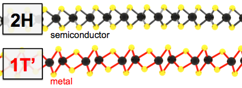
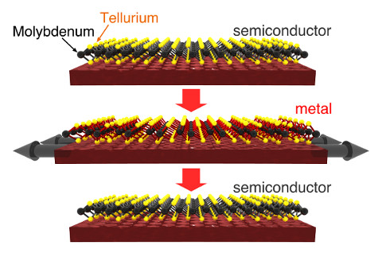

Our research has discovered atomically thin materials that dramatically change their crystal structure and electrical properties when they are deformed. This result creates new opportunities for information and energy storage, and could have applications in flexible devices, or more generally in transparent, wearable and low-power electronics.

A side view of two differing crystal structures of the 2D Mo- and W-dichalcogenides. The most commonly occuring 2H structure is an electrical semiconductor, whereas the alternative 1T' structure is metallic. Our research has discovered that phase transitions between these structures are possible by virtue of tension.
Imagine an experiment where you separate a piece of paper along its thickness into two thin sheets. Now image splitting the resulting sheets over and over again, until you are left with films that are just a few atoms thick. You might think that in reality your sheets would disintegrate long before they are atomically thin. You would be right in most cases, but it turns out that there are a few special materials that can really be reduced to a thickness of just a few atoms. The resulting atomically thin layers are called two-dimensional (2D) materials.
The most famous 2D material is graphene: one layer of carbon atoms. Early research on graphene showed that 2D materials have many exotic properties that exist only in the ultra-thin limit. These materials' desirable electronic properties, very high mechanical strength and extreme surface-to-volume ratio have gained much attention from researchers in fields as diverse as electronics, catalysis, batteries and composites.
To be able to build ultralow-power electronic devices using two-dimensional materials, an extra ingredient is needed: the capacity for the same 2D material to exist in more than one crystal structure. Alternate 2D crystal structures can be used for energy and nonvolatile information storage. To find a 2D material with this desirable feature, we need to look beyond graphene.

A strain-driven structural phase transition between 2H-MoTe2 and 1T'-MoTe2.
Our research team has discovered 2D materials can exhibit phase transitions between crystal structures, with each structure having distinct properties. One crystal structure is a 2D semiconductor, whereas the other is a 2D metal. We have discovered that mechanical tension is the key to achieving a transition from one crystal structure to the other. This process is illustrated in the image above, where a 2D material's atoms rearrange into a lower-free energy crystal structure when you apply a tensile deformation. The fact that mechanical tension switches a material between two very different 2D phases is very fertile ground for technological applications including energy storage, sensors and nonvolatile digital memory.
Using density functional theory (DFT) calculations, we subjected a set of 2D compounds to the same question: what is the phase diagram as a function of strain? In some cases, we found that tensile strains on the order of 1% are enough to switch thermodynamic stability from the semiconducting to metallic crystal structure, or vice versa. Since these materials are extremely strong, such deformations are easily attainable without causing damage, perhaps using flexible-substrate methods. Our research team's calculations find that MoTe2, a newly emerging 2D material, is the most promising for phase-change applications.

DFT-calculated trajectory of MoTe2's lattice strain and crystal structure under uniaxial and isotropic stress. This calculation includes the effect of quasiharmonic room temperature phonon free energy. Under uniaxial stress, a 2H-1T' phase transition is predicted at around 1% strain.
Publication:
Duerloo, K.-A. N., Li, Y., Reed, E. J., Structural Phase Transitions in Two-Dimensional Mo- and W- Dichalcogenide Monolayers. Nature Communications, doi:10.1038/ncomms5214 (2014).
News coverage:
Stanford engineers envision an electronic switch just three atoms thick. Stanford Report, July 1, 2014
Three-Atom Thick Material Switches Between a Conductor and an Insulator When Tugged. IEEE Spectrum, July 1, 2014